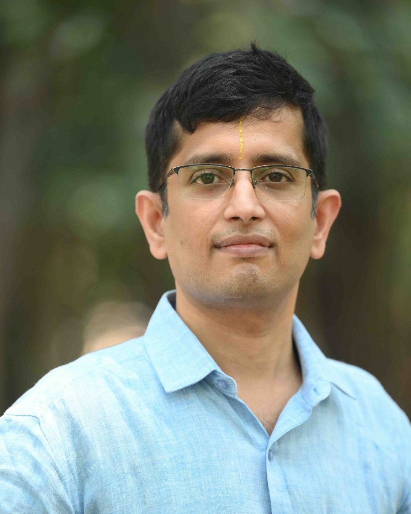
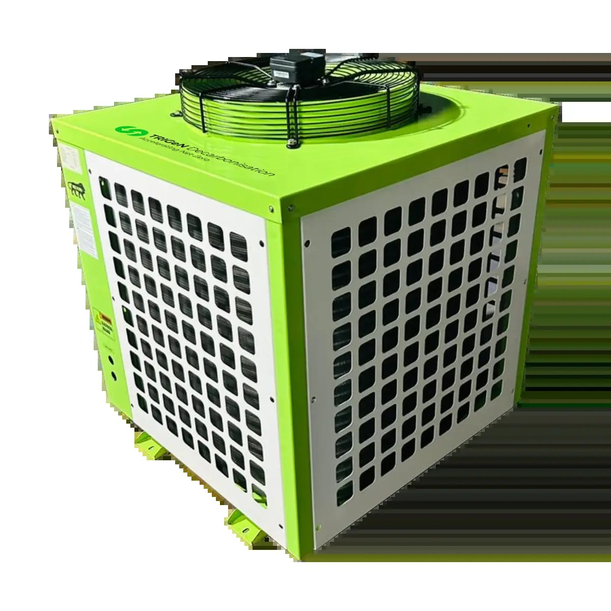
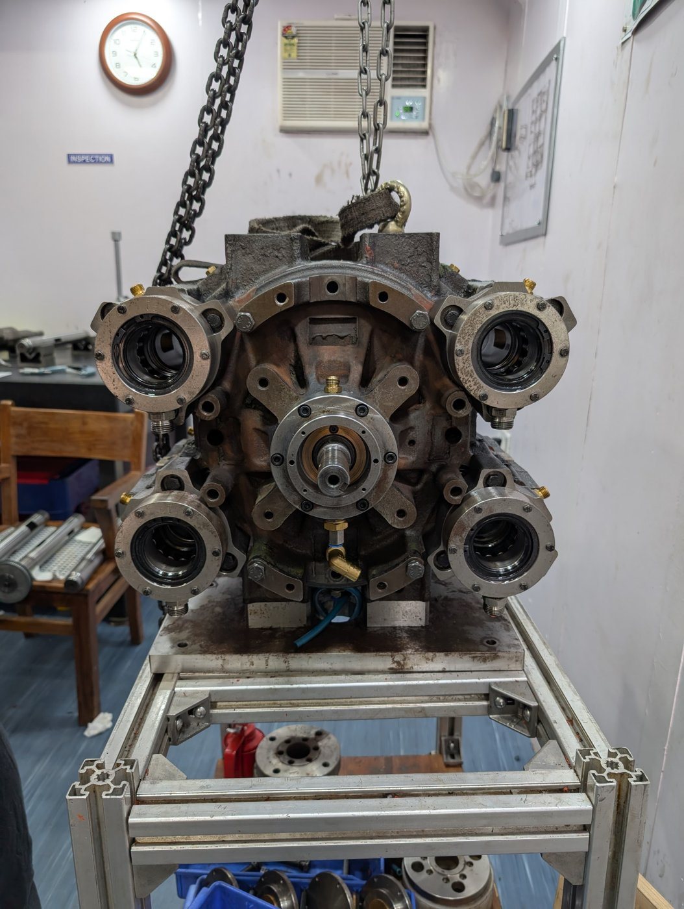
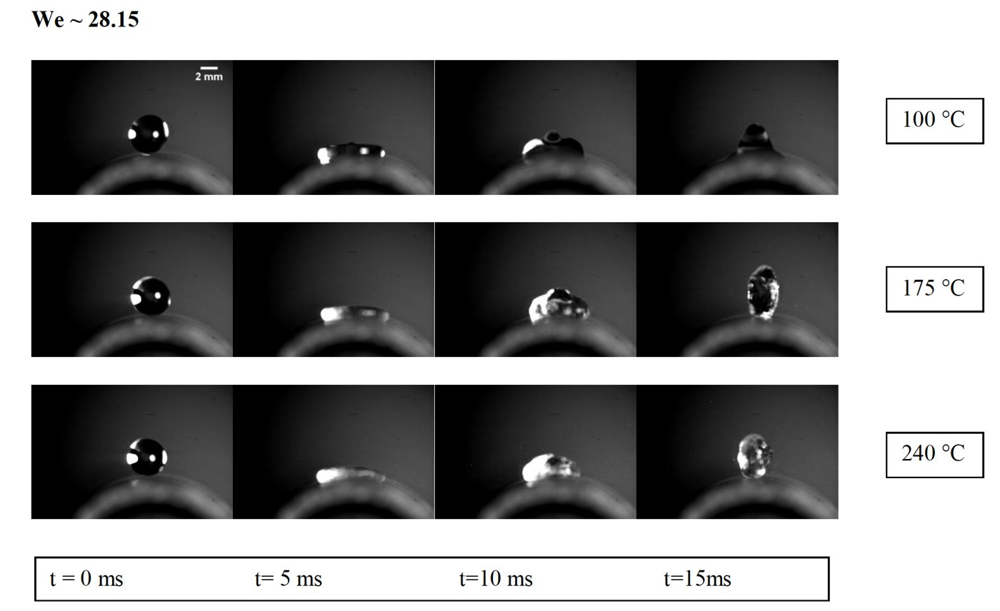
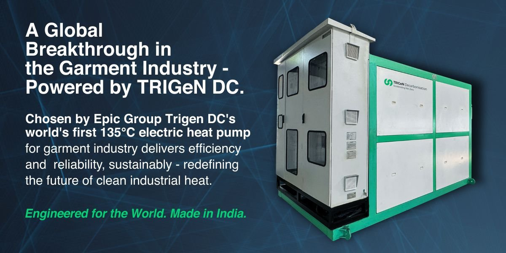

Professor · Shell Chair Professor · IIT Madras
Engineering India's industrial energy transition
Satyanarayanan Seshadri leads research, national institutions, and deep-tech startups decarbonising industrial energy use in India — high-temperature heat pumps, steam expanders, and an industry–academia–government ecosystem. His model: research to relevance to revenue.
What's new
News is managed in the CMS News tab.
Research
More
MSME energy efficiency
KISEM has audited 255 firms across 30 sectors — ₹180 Cr savings identified, ~100,000 t CO₂.

Electrifying process heat
India's first 120 °C industrial heat pump; 50+ sites, 200+ units; −35 °C variants in the Himalaya.

The Wankel expander
Recovering power from steam pressure reduction — a ~20 GW opportunity, 80 MT CO₂e/yr potential.

Diagnostics to net-zero AI
Optical emission sensing, flow batteries and CAES, physics-informed ML for building energy.
Latest publications
MoreLoading…
Ventures
More Wankel Energy Systems">
Wankel Energy Systems">Wankel Energy Systems
MIT Clean Energy Prize 2024 finalist — top 8 of 163, only Indian startup.

TrigenDC
High-temperature and steam heat pumps; FLCTD/UNIDO award winner 2022.
EnergyEta
A building-energy OS — IoT sensing with physics-informed machine learning.
AranTree Consulting
ESG and decarbonisation consulting for corporates.